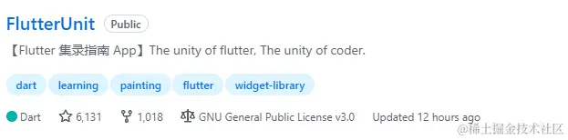
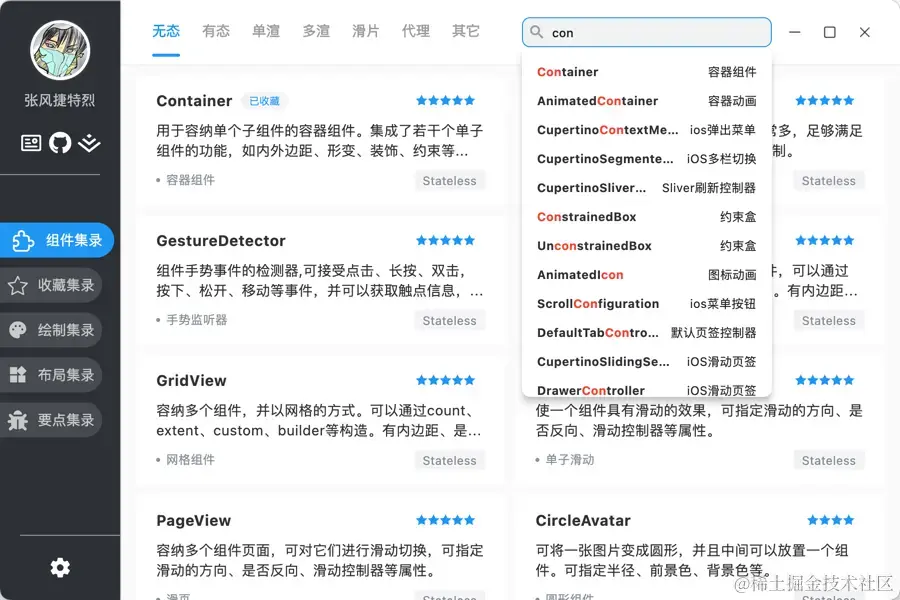
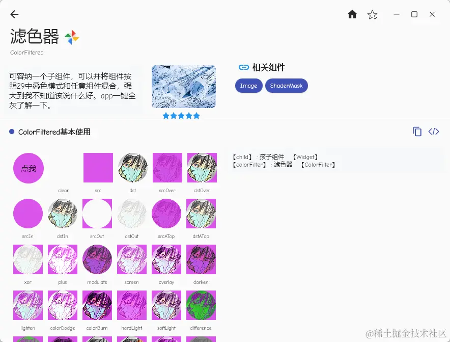

- 01 前言-教程内容导读.md.html
- 02 Flutter 开发环境的搭建.md.html
- 03 新手村基础 Dart 语法 (上).md.html
- 04 新手村基础 Dart 语法 (下).md.html
- 05 Flutter 计数器项目解读.md.html
- 06 猜数字界面交互与需求分析.md.html
- 07 使用组件构建静态界面.md.html
- 08 状态数据与界面更新.md.html
- 09 校验结果与提示信息.md.html
- 10 动画使用与状态周期.md.html
- 11 猜数字整理与总结.md.html
- 12 电子木鱼界面交互与需求分析.md.html
- 13 电子木鱼静态界面构建.md.html
- 14 计数变化与音效播放.md.html
- 15 弹出选项与切换状态.md.html
- 16 用滑动列表展示记录.md.html
- 17 电子木鱼整理与总结.md.html
- 18 白板绘制界面交互与需求分析.md.html
- 19 认识自定义绘制组件.md.html
- 20 通过手势在白板上绘制.md.html
- 21 白板画笔的参数设置.md.html
- 22 撤销功能与画板优化.md.html
- 23 应用界面整合.md.html
- 24 数据的持久化存储.md.html
- 25 网络数据的访问.md.html
- 26 教程总结与展望.md.html
- 捐赠
26 教程总结与展望
1. 教程小结
对于应用程序来说，最重要的有两方面: 数据和界面。
数据的信息为界面提供构建资源 界面的交互让数据内容发生变更
学完本教程，希望大家可以意识到 Flutter 中界面由 Widget 派生类来决定；而组件实例化时的配置信息就是界面中所依赖的数据。数据和界面就像一枚硬币的两面，两者相辅相成，缺一不可。用户站在界面的面前，开发者站在数据的面前。作为开发者，我们不能只关注界面，而忽略数据关系。
- 关于组件(界面)
组件 Widget 作为界面的决定因素，对界面来说，主要就是通过定义组件来处理 构建逻辑(Build Logic) 。在很长一段时间，你自己创建的组件只有 StatelessWidget 和 StatefulWidget 这两个族系。它们可以使用已经存在的组件进行组合，成为新的组件。这种组合形式，可以封装一些构建逻辑，以便复用或拆分结构。
StatefulWidget 依赖 State 状态类完成 build 构建任务，并且 State 有对应的生命周期回调，可以处理相关逻辑；也能使用 setState 方法重新触发当前状态类的构建任务，实现界面更新。
对 State 的认知也伴随你很长的路途，如果希望在 Flutter 有长远的发展，以后有时间和能力时，还是建议从框架底层的源码中去思考状态类的作用，才能看清 Flutter 机器的整个运转流程。
- 关于数据
数据是界面中依赖的信息，有的数据是死的，在程序运行期间永远不会改变，比如标题的文字、或固定的描述信息。图片、图标等；有些数据是活的，会通过函数进行传递、流动、变化，比如白板中的线列表、木鱼中的功德数、网络文章中的文章列表。
如何获取数据、如果保存数据、如何更改数据，是程序开发者最需要关注的事，数据的维护直接关系到程序功能的正确性。这些处理数据的逻辑可以称为 业务逻辑(Business Logic)。
对于 Flutter 开发者，甚至是任何和界面相关软件的开发者，都需要意识到构建逻辑和业务逻辑这两条命脉。如何合理地维护这两类逻辑，也是今后值得不断深入思考的事。
本教程的总结，我只想点出上面的两点，希望大家可以在以后的路途中铭记于心。
2. 关于 Flutter 组件的认知
Flutter 框架中提供的内置组件估计已经接近 400 个了，每个组件都有各自的特点。把它们一一背下来是不现实的，对于初学者来说，应该注重常用的组件，比如本教程四个案例中涉及到了组件，都可以深入了解一下。组件本质上只是配置信息，通过传参控制界面展示效果，当你了解玩常用组件，其余的都可以一通百通。在日常开发中逐渐接触，把组件看成可以帮里完成构建界面的朋友，而不是不得不接触的敌人。
教程中的四个案例中使用的组件，都没有进行非常细致的介绍。因为：
[1] 并不是非常必要。
考虑到对组件一一介绍起来非常繁琐和无聊，不仅会占据很多的篇幅，而且学起来也很枯燥，很容易拘泥于琐碎的组件而无法对 Flutter 有整体的认知。所以我才构思了四个小项目，让大家在实践中了解它们的存在和使用方式，在交互中体验更有趣。
[2] 已经的历史文章积累。
我在掘金中为很多常用的组件写过专文介绍，大家后期对某个组件感兴趣可以各取所需去了解。专栏地址为 Flutter 组件集录 :
[3] 完善的组件介绍开源项目。

关于Flutter的组件介绍，我有一个使用 Flutter 框架实现开源项目 FlutterUnit ，其中收录了 350 多个组件的介绍和使用范例，支持范例的代码查看和分享。并且支持全平台，可以在手机和电脑上安装应用程序来体验：
| 主页面 | 详情页 |
|---|---|
- 桌面端界面:


想了解 Flutter 里有哪些组件，或通过组件名搜索查看使用方式， FlutterUnit 都是一个很好的选择。现在项目的 star 个数已经 6000 多了，对于 Flutter 开源项目来说算是比较高了，希望大家可以多多支持。
3. 对未来发展方向的展望
一个侠客行走江湖，需要精进的方向有两个，其一是 修炼内力，其二是 修炼招式 。对于开发者来说，理解底层运转的机理就是内力；如何开发出应用程序就是招式。使用刚步入江湖时，修炼的方向各有不同，人各有志，也不必强求。
如果你并不急着打造一个软件产品，在起步时打牢基础，修炼内力，是不错的选择。这时，推荐你去研读我的七本小册，我称之为 "Flutter 七剑"，助你在未来的道路上披荆斩棘：
| 小册名称 | 发布时间 | 代码仓库 | 售价(RMB) |
|---|---|---|---|
| 《Flutter 绘制指南 - 妙笔生花》 | 2020年11月11日 | idraw | 3.28 |
| 《Flutter 手势探索 - 执掌天下》 | 2021年05月13日 | itouch | 3.5 |
| 《Flutter 动画探索 - 流光幻影》 | 2021年07月09日 | ianim | 3.5 |
| 《Flutter 滑动探索 - 珠联璧合》 | 2022年02月10日 | iscroll | 3.5 |
| 《Flutter 布局探索 - 薪火相传 》 | 2022年03月30日 | ilayout | 3.5 |
| 《Flutter 渲染机制 - 聚沙成塔 》 | 2022年04月27日 | irender | 3.5 |
| 《Flutter 语言基础 - 梦始之地 》 | 2022年09月14日 | idream | 3.5 |
如果你迫于工作压力，或者急需上手开发项目，最好的方式是找一些开源项目来研究，学习招式。这里推荐几个项目，都是在持续维护更新的：
另外，如果你学习编程只是业余的兴趣爱好，可以体验一下基于 flame 开发小型游戏，在游戏中学习可谓乐趣无穷。我也写过一个专栏 《Flutter&Flame 游戏专栏》：
其实不管开始修炼的道路是什么，只要想在这江湖中立足，最终内力和招式都要精进。所以不用过于纠结什么先，什么后，需要什么就去修炼什么。到这里，本教程就已经完结了，感谢大家的观看，以后有缘再见 ~
© 2019 - 2023 Liangliang Lee. Powered by gin and hexo-theme-book.